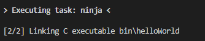
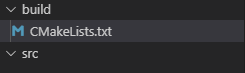

Part 4: “Hello, World!” with Visual Studio Code and NI Linux Real-Time¶
Table of Contents
Introduction¶
The NI Linux Real-Time C/C++ Cross Compile toolchain allows customers to create custom applications and binaries for distribution to NI Linux Real-Time systems. This tutorial walks through the creation, deployment, and debugging of a C code “Hello, World!” application using the cross compile toolchain and a Linux Real-Time controller.
Requirements¶
This tutorial requires the following software and hardware:
A development PC configured as described in Part 2: Configuring a Development System with Visual Studio Code
A project template as described in Part 3: Configuring Visual Studio Code for Building NI Linux Real-Time C/C++ Code
(Optional) A Linux Real-Time System (e.g., PXI or CompactRIO) with SSH access enabled for deployment and debugging. The versions of software installed on this device should match the toolchain version used.
Note: This tutorial uses a C source file, but the same steps and configurations apply to C++ code. CMake can differentiate between C and C++ files to ensure the proper compile commands are used.
Creating a Project¶
This tutorial assumes that a template project for ARMv7 or x64 NI Linux Real-Time Targets has been created as detailed in Part 3: Configuring Visual Studio Code for Building NI Linux Real-Time C/C++ Code. With a template created as described there, the following steps can be taken to create a new project:
Create a new directory to serve as the top-level project directory.
- Copy the contents of the template project directory into this newly created directory.
Open the folder in Visual Studio Code by doing one of the following:
- Right-click anywhere in the folder and select Open with Code.
- Launch Visual Studio Code, then select File >> Open Folder and choose the folder to open.

- Confirm that the folder opened properly in Visual Studio Code in the Explorer.
Creating the C Source Code¶
With the project open, next is creating the source code. NI recommends manually typing out the source for this “Hello, World!” application instead of simply copying the source. This allows demonstration of the IntelliSense functionality in Visual Studio Code.
In the src directory of the project, create a new source file titled helloWorld.c.
Save the file.
- Complete the file as shown below, noting the IntelliSense autocompletion and error highlighting.
#include <stdio.h> #include <stdlib.h> int main(void) { puts("Hello, World!"); return EXIT_SUCCESS; }
Save helloWorld.c.
Building C Source Code using CMake and Ninja¶
In this tutorial, the build process will be handled by CMake and Ninja. These tools can easily be swapped for other similar build tools with an understanding of the compile flags and other settings used for the NI Linux Real-Time GNU C/C++ Compilers.
CMake will be used to generate Ninja build files, which will then be used to script the compilation of the “Hello, World!” executable. For building on Linux systems, Ninja can be replaced with GNU Make with proper changes to the CMake build configuration and tasks.json file.
CMake Configuration¶
CMake uses a CMakeLists.txt file for any build configuration. That is, the actual CMake program takes its instructions from a CMakeLists.txt file that defines one or more build targets and the configurations necessary for them. Since the template project already contains a CMakeLists.txt with the compiler and include configurations required for all NI Linux Real-Time compilations, only the project specific configurations need added. For more information on these configurations, refer to the official CMake documentation.
Open the <project directory>/build/CMakeLists.txt file in the Visual Studio Code editor.
Add the following lines to the end of the file. .. code:: cmake
# project specific information cmake_minimum_required(VERSION 3.14) project(helloWorld) set(EXECUTABLE_OUTPUT_PATH bin) set(CMAKE_BUILD_TYPE Debug) add_executable(helloWorld ../src/helloWorld.c)
Save CMakeLists.txt.
Building¶
With CMakeLists.txt completed, CMake now has all the information needed to create the build files for Ninja and then build the final binary. CMake and Ninja will be invoked via Tasks in Visual Studio Code as defined in the tasks.json file in the .vscode directory of the template used to create the project. These allow shell commands to run in the Visual Studio Code terminal and can be expanded to other build tasks if desired. Refer to the Integrate with External Tools via Tasks for more information on creating and using tasks.
Run the custom task to invoke CMake. Open the command palette via Ctrl + Shift + P or View >> Command Palette…
- Search for and select Tasks: Run Task in the Command Palette. This will pull up a list of the custom tasks available in the project.
- From the list of custom tasks, select CMake Generate Build Files or the equivalent task in the project’s tasks.json if a different name was used.
- Confirm that the task runs and completes successfully in the Terminal window. There should be several new files in the build/ directory of the project including a new bin/ directory for the build output, build.ninja, and CMakeCache.txt.
Run the build using Ninja using the task defined in tasks.json. Open the Command Palette and select Tasks: Run Task again.
- Select Ninja or the name used for the Ninja build task in the project’s tasks.json file.
- Confirm that the build task runs successfully and that there is now a helloWorld binary in the <project folder>/build/bin directory.
- (Optional) Add a syntax error to the helloWorld.c source file and run the Ninja task again. Note that since a problem matcher has been specified in tasks.json for the Ninja task, the compilation errors introduced now appear in the Problems window within Visual Studio Code alongside any syntax errors flagged by the editor. Fix the error and rebuild.
Deploying and Running a Compiled Executable¶
Since the “Hello, World!” executable was built using the NI Linux Real-Time C/C++ Cross Compile tool chain, the binary output must be run on the NI Linux Real-Time Operating System it was built for. While the binary was created on a host system with a different OS, it cannot be tested without access to a Linux Real-Time target.
To run a cross compiled binary on a Linux Real-Time system, it must be deployed and then run from a shell or console. For the purposes of this tutorial, FileZilla will be used to transfer the file via sFTP and PuTTY will be used to access a shell on the remote target via SSH. Alternatives to this approach include using Secure Copy instead of sFTP, direct keyboard and monitor access with a USB thumb drive, or any combination of available options.
- Ensure that SSH is enabled on the Linux Real-Time system. For systems using *.ipk-based installations such as PXI Linux Real-Time devices, this will be enabled by default once a System Image is installed. For other Linux Real-Time systems, SSH can be enabled in NI MAX in the System Settings for the device.
Launch FileZilla.
- In FileZilla, connect to the Linux Real-Time target using the IP Address or Hostname, admin account, and Port 22. Click Quickconnect to open the connection.

- In the Remote site, ensure that the directory location is /home/admin. Create a new directory for the binary deployment with a descriptive name (e.g., helloWorld/).
Open the new directory in the Remote site side of FileZilla.
- On the Local site side, navigate to the location of the binary to be deployed.
- Copy the binary by double-clicking it in the local file system view. A copy should now appear in the remote file system.
- By default, the file will not have any execute permissions defined and will not be executable. This can be fixed by right-clicking the remote copy of the file and selecting the File permissions… item from the context menu or directly from a shell using the chmod command.
Close FileZilla.
Open PuTTY.
- Select a Connection type of SSH and enter the Host Name (or IP Address) of the target. Confirm that the Port field is set to 22 and then click Open.

- Log into the target as the admin user.

- Change directories to the location of the deployed binary.
- Run the executable and confirm that it works properly.
Debugging Remotely with GDB¶
By default, the Remote Server for the GNU Debugger (gdbserver) is included on all NI Linux Real-Time devices. A corresponding installation of the GNU Debugger is included with the NI Linux Real-Time GNU C/C++ Cross Compile toolchain. This makes it easy to connect and debug executables running on the remote target from a Host system performing cross compilation.
Visual Studio Code allows configurations for remote debugging through the properties set in the launch.json file for a given project. In this file, the remote target, gdbserver port, and executable to be debugged are defined before launching a connection to the remote debug server.
Configuring launch.json¶
The launch.json file contains the information necessary to allow Visual Studio Code to use a debugger such as the GNU Debugger (gdb). For more information on launch configurations and debugging in Visual Studio Code, refer to Configuring C/C++ debugging.
In Visual Studio Code, open the <project folder>/.vscode/launch.json file. This file should have some information such as the miDebuggerPath completed already as part of the template project creation.
- Complete launch.json for the “Hello, World!” application as shown below. Specifically, the program and miDebuggerServerAddress fields using the IP address of the remote NI Linux Real-Time device and the local binary build.
{ // Use IntelliSense to learn about possible attributes. // Hover to view descriptions of existing attributes. // For more information, visit: https://go.microsoft.com/fwlink/?linkid=830387 "version": "0.2.0", "configurations": [ { "name": "x64 (gdb) Launch", "type": "cppdbg", "request": "launch", "program": "${workspaceFolder}/build/bin/helloWorld", "args": [], "stopAtEntry": false, "cwd": ".", "environment": [], "showDisplayString": true, "MIMode": "gdb", "miDebuggerPath": "C:/build/18.0/x64/sysroots/i686-nilrtsdkmingw32/usr/bin/x86_64-nilrt-linux/x86_64-nilrt-linux-gdb.exe", "miDebuggerServerAddress": "10.2.110.136:9092" } ] }
Save launch.json
Debugging the Remote Executable¶
Debugging the executable on the remote system requires launching gdbserver with the executable at the port specified in launch.json then run the launch profile defined in Visual Studio Code to connect the debugger. Once the debugger is connected, standard debugging tools such as breakpoints are available.
If not already connected to the remote NI Linux Real-Time device, open PuTTY and connect via SSH.
- Change directories to the location of the debuggable binary.
- Launch gdbserver at the port defined in launch.json. This should result in gdbserver listening for any connections from a gdb connection at that port.
In Visual Studio Code, open helloWorld.c in the editor.
- Switch to the Debug view by clicking the Debug icon.
- In the Debug view, ensure that the launch configuration defined is selected as the configuration.
- In the helloWorld.c source file, click to the left of to the line that prints the “Hello, World!” message to place a breakpoint.

- Connect to the remote gdbserver by clicking the Start Debugging button.
- Confirm that the program has stopped at the breakpoint and that the SSH session shows a debugger is connected.
- Use the debugging tools in Visual Studio Code to step through the source code and debug the application. Note the output of the program in the SSH session while stepping through the application.
- Complete execution of the program by click the Continue button or hitting F5. Note the exit status of the application in both the Debug Console in Visual Studio Code and the SSH Session.
Note: While debugging, not all symbols or source files for the Linux Kernel are available. If an attempt to step into that code is made, Visual Studio Code may be unable to open or find that certain source files. If this occurs, finish debugging with either Continue or Stop.